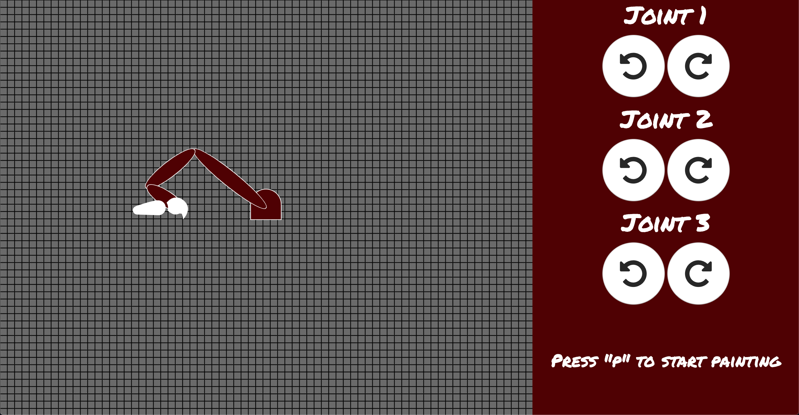
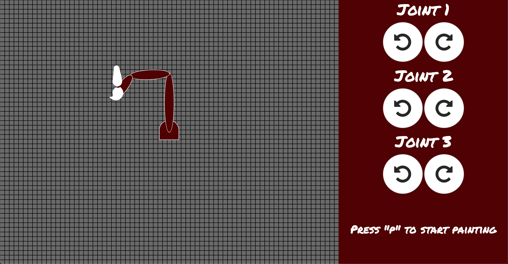
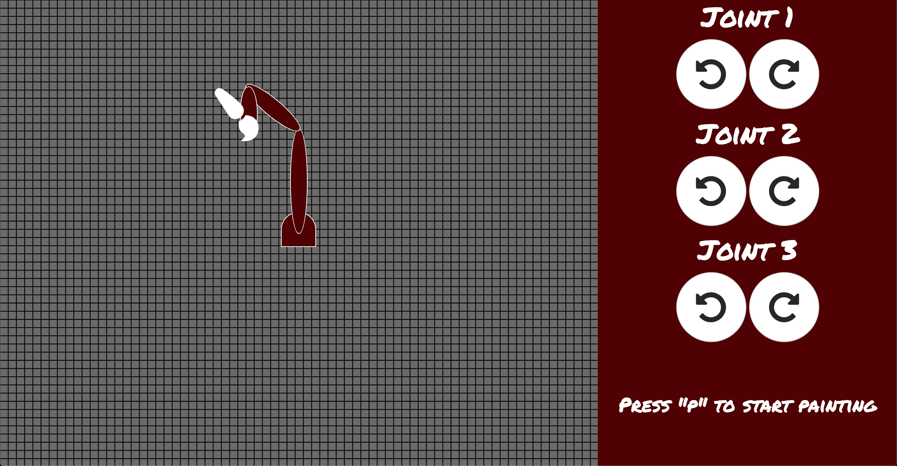
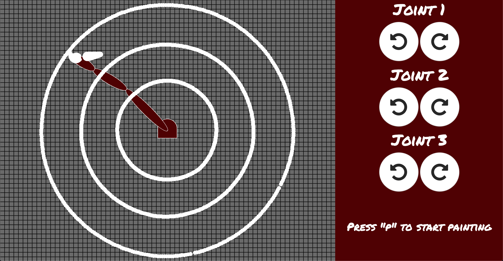
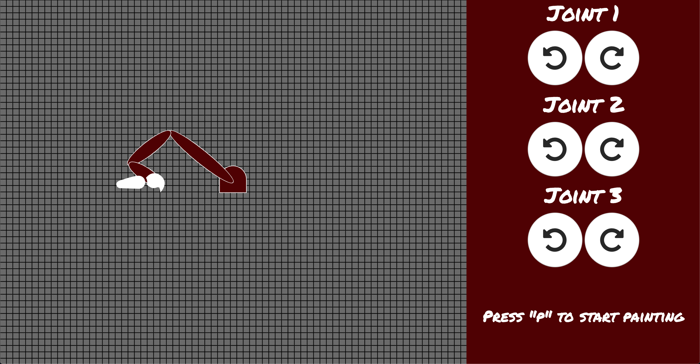
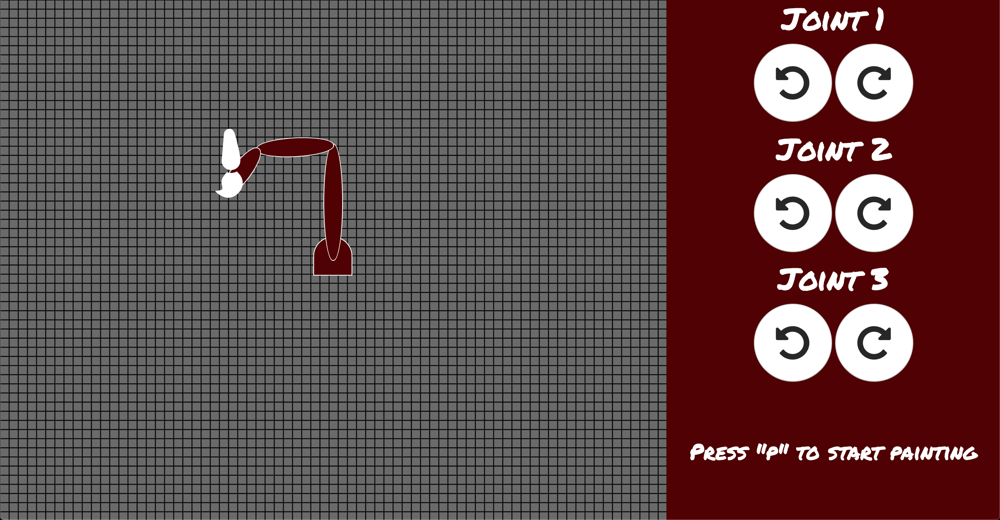
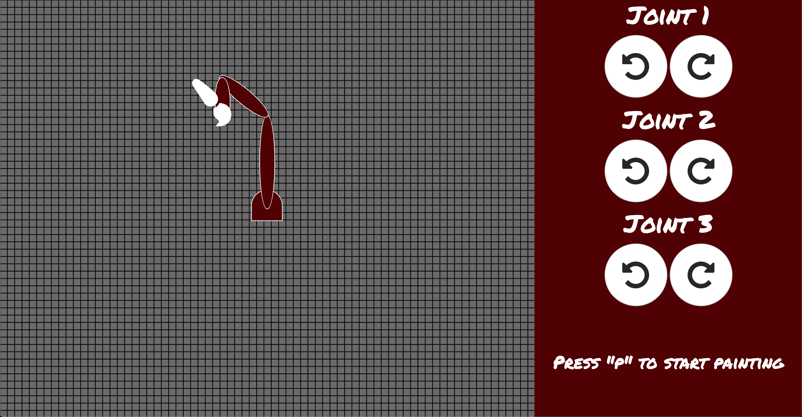
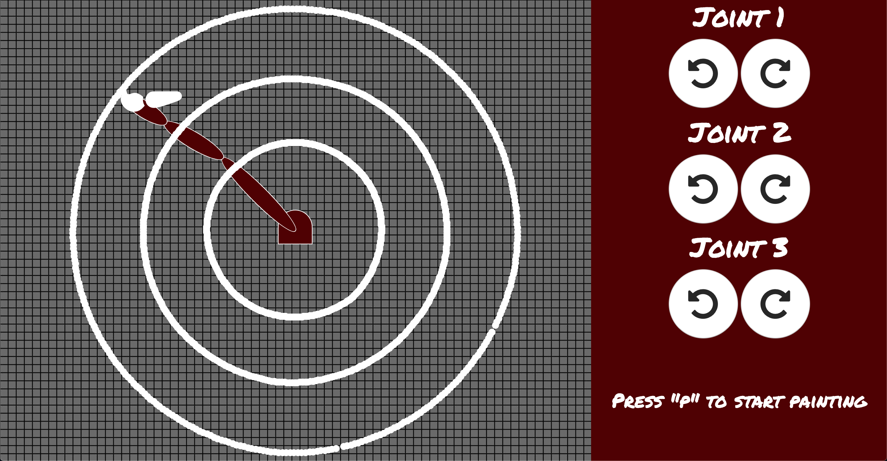

BACK
DEMO
Member Task Allocation
Julian Tiu built the software foundation for the robot arm using JavaScript Text as well as the html framework for the website.
Drew Carr and Murtaza Hakimi built upon Julian Tiu’s foundation and implemented the painting task, as well as made improvements to the interface.
Trevor Kay and Alexandra Wilson arranged the report, as well as task allocation, and team meeting log, as well as modifying Julian’s html framework with the contents of these sections.
Luis Davila contributed to the project report.
Meeting Log
Much of the work was done remotely with github and online communication. In addition to remote communication, short meetings usually occurred before or after class where we discussed some task allocation and touched base on what had been accomplished.
We met on 9-29-2019 for a few hours to build off of the work Julian provided, and finalized the paint function. We also started organizing the report data and information on the website.
Throughout the week after, the report and website was finalized.
Source Code
Source Code: https://github.tamu.edu/csce452/project-website/tree/master/public/project1
Compiling Instructions: No compilation is necessary, as the demo runs in a browser and can be tested at https://csce452.firebaseapp.com/project1/project1.html
Screenshots
 







Report
Report